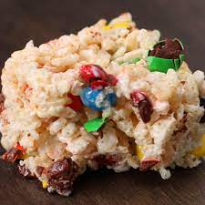

3-Ingredient Crispies Treat

Don't ask me to save you one 'cause they will be gone in minutes!
Ingredients
- 1 cup chocolate candy
- 2 1/2 cups marshmellow
- 3 cups puffed rice cereal
Steps
- Prepare a square glass baking dish with cooking spray.
- Melt marshmellows over medium heat in a non-stick pan. Stir ever 30 seconds to avoid burning. (TIP! spray your spatula with nonstick cooking spray to make stirring easier.)
- Once the marshmellows are melted, add in the rice cereal and chocolates. Stir until fully combined.
- Scoop the mixture into the sprayed baking dish and flatten with a spatula.
- Cool for 30 minutes, then cut into squares.
- Enjoy!
Recipe by Camille Bergerson from Tasty
Return home